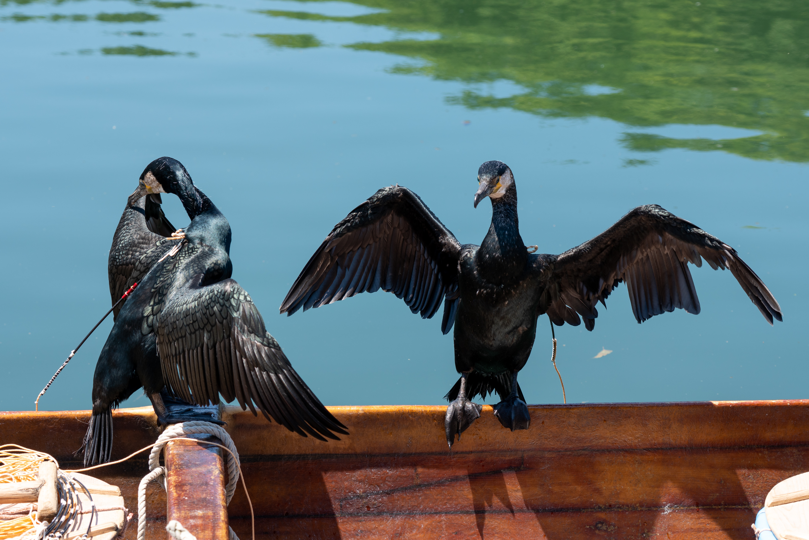
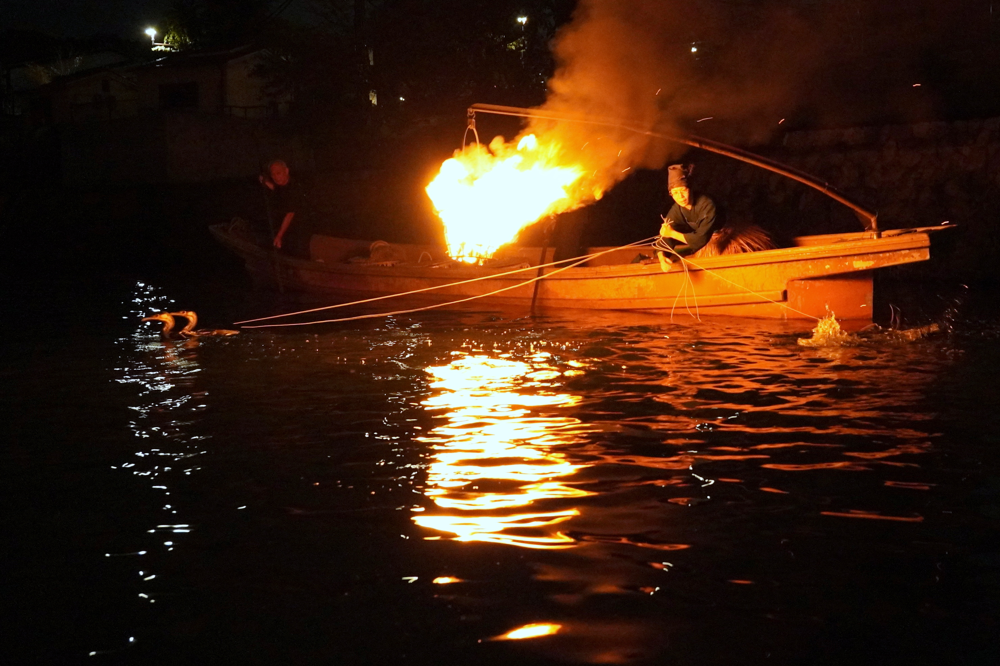

1300年以上受け継がれる 岐阜の伝統「鵜飼」
長良川の夜を彩る、岐阜ならではの風物詩。

長良川鵜飼で活躍する「鵜」は、水中に潜って魚を捕らえることを得意とする鳥です。
主に海鵜（うみう）が使用されており、優れた潜水能力と鋭いくちばしを活かして鮎を追いかけます。その姿はとても力強く、観覧船から見ると魚を捕らえる瞬間の迫力を間近で感じることができます。
また、鵜飼は鵜だけで成り立つものではありません。鵜匠は日頃から鵜の世話を行い、一羽一羽の性格や体調を把握しながら信頼関係を築いています。そのため漁の際には鵜と鵜匠が見事な連携を見せ、1300年以上受け継がれてきた伝統技術の深さを実感できます。
長良川鵜飼では、普段なかなか見ることのできない鵜の生態や能力を知ることができるだけでなく、人と動物が協力して行う貴重な伝統文化にも触れることができます。そのため、動物が好きな人や日本の歴史・文化に興味がある人、特別な体験をしてみたい人におすすめです。
鵜飼い

長良川鵜飼は、夜の長良川で行われる岐阜を代表する伝統行事です。
日が沈むと鵜舟にかがり火が灯され、炎の光が川面を照らし出します。その幻想的な景色は、まるで昔の時代へタイムスリップしたかのような雰囲気を味わわせてくれます。
観覧船に乗れば、鵜匠が巧みに鵜を操る様子や、鵜が鮎を追いかける迫力ある漁の様子を間近で見ることができます。特に鵜飼の終盤に行われる「総がらみ」では、複数の鵜舟が横一列に並んで漁を行い、長良川鵜飼ならではの壮観な光景を楽しむことができます。
また、周辺には岐阜城や川原町の古い町並みなど歴史を感じられる観光スポットもあり、昼は観光、夜は鵜飼を楽しむことで岐阜の魅力を存分に満喫できます。幻想的な景色が好きな人はもちろん、伝統文化に触れたい人や家族・友人・恋人と特別な思い出を作りたい人にもおすすめです。